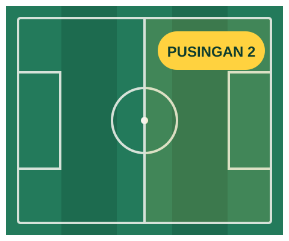

Malaysia Super League · Liga Pusingan Kedua
Missed the start? Join the second half.
Your Super League team fell apart by October, or you never got round to picking one. Our friendly Bukit Cempaka mini-league resets for the second round so everyone starts level. Play for trophies and bragging rights at the mamak, and your entry goes to Cempaka Muda FC. Jom!

How it works
-
Register interest
Tell us your team name and pick a format. It takes about a minute.
-
Get your league code
We email a code before the deadline. Enter it in the free fantasy game you already use.
-
Play the second round
Only points from the first gameweek after the mid-season break to the final matchday count. Your first-round score doesn't matter here.
Choose your format
Three ways to play, all running at the same time. You can switch format until registration closes.
Classic
The highest total score across the second round wins. A steady league for people who like a long race.
- Suits
- Anyone who plays most weeks
- Time
- About 10 minutes a week
- Entry
- Suggested RM20 donation
- Prize
- The Perisai Pusingan Kedua (Second-Half Shield)
Head-to-Head
Every gameweek you play one other manager. A win is worth 3 points and a draw 1. The top four go into a play-off over the last two gameweeks.
- Suits
- People who like a weekly rivalry
- Time
- 10–15 minutes a week
- Entry
- Suggested RM20 donation
- Prize
- The Piala H2H Cempaka
Beginners
Classic scoring, for managers in their first season only. You get a short tips email before each deadline and an experienced player you can ask questions.
- Suits
- First-time managers
- Time
- About 5 minutes a week
- Entry
- Free (donations welcome)
- Prize
- Rookie of the Year medal
Key dates
- Registration opens
- Registration closes at 6pm (MYT)
- Second round kicks off
- Awards night and makan at Dewan Komuniti Bukit Cempaka
Where your entry goes
There's no cash prize. Every donation goes to Cempaka Muda FC, a volunteer-run club for 160 players aged 6 to 16. Last season's league raised RM6,850, which paid for:
- 3 new sets of jerseys
- 40 hours of floodlit padang hire
- 6 volunteers through grassroots coaching courses
Register interest
Demo form: this is a portfolio project. Nothing you type is sent, stored or logged.
What happens next
- You'll get your league code by email before 30 December.
- The league rules fit on one page and come with your code.
- You can donate when you join, or later. It's never required.
Questions
I've never played fantasy football. Is that OK?
Yes. Join the Beginners format and you'll get a short tips email before each deadline, plus an experienced player you can ask. Most people have their squad picked in 20 minutes.
Do I need a new team?
No. Keep the team you already have. Only points scored in the second round count in this league.
Is there prize money?
No. Winners get trophies, presented at the awards night. Every donation goes to Cempaka Muda FC.
What if I miss a deadline?
Your team keeps playing with its last saved line-up. Nobody is removed for being inactive.
Is this the official game?
No. Gameweek Club is an independent local group that runs a private league inside the free fantasy game. We aren't connected to the Malaysian Football League, any club or any game provider.